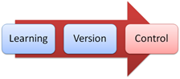
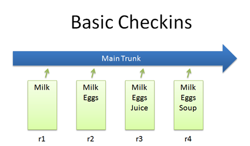
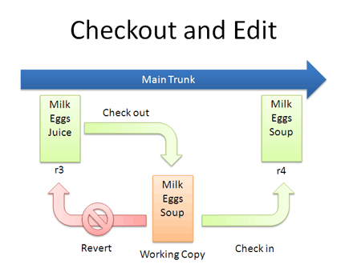
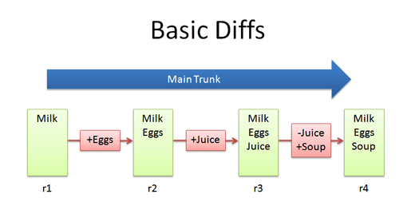
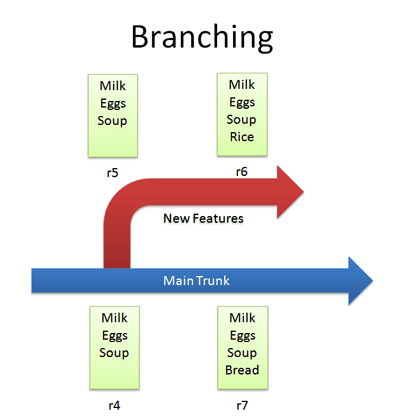
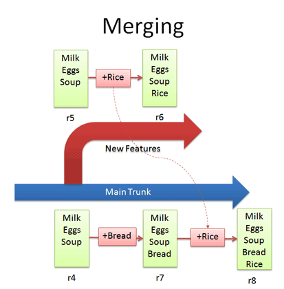
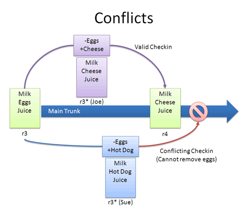
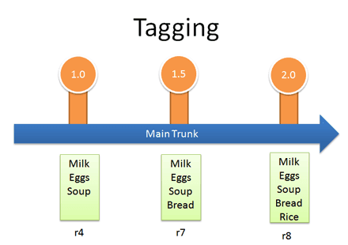
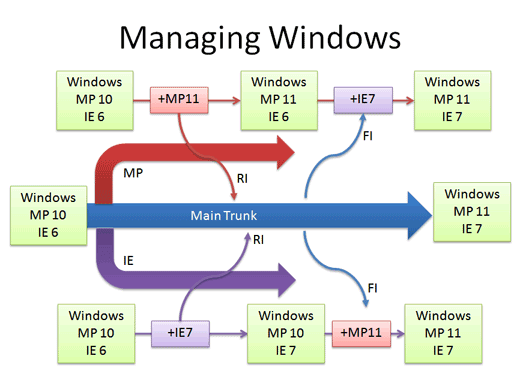

版本控制系统入门
我知道版本控制系统（VCS）很有用。
但是，我平时只是业余写一些小程序，感觉特地装一个VCS太麻烦，所以一直没有用。最近，因为想认真做一个中等规模的项目，所以决心好好学一下怎么用。
下面就是我翻译的一篇入门教程，主要解释了VCS的一些主要概念。
1. A Visual Guide to Version Control
2. 版本控制入门插图教程
作者：Kalid Azad
译者：阮一峰
原文网址：http://betterexplained.com/articles/a-visual-guide-to-version-control/
- 1. A Visual Guide to Version Control
- 2. 版本控制入门插图教程 - 2.0.1. 前言 - 2.0.2. 什么是版本控制系统（VCS）？ - 2.0.3. 一些术语 - 2.0.3.1. 基本概念 - 2.0.3.2. 基本操作 - 2.0.3.3. 高级操作 - 2.0.3.3.1. Check in - 2.0.3.3.2. Check out和编辑 - 2.0.3.3.3. Diff - 2.0.3.3.4. Branch - 2.0.3.3.5. Merge - 2.0.3.3.6. Conflict - 2.0.3.3.7. Tag - 2.0.3.4. 一个实际的例子：管理Windows源码 - 2.0.4. 结束语
2.0.1. 前言

版本控制（Version Control）的作用是追踪文件的变化。为什么需要版本控制？简单说，就是当你出错了，可以很容易地回到没出错时的状态。
你可能已经在不知不觉中，布置了自己的版本控制系统。比如，创建了类似下面这样的文件名：
KalidAzadResumeOct2006.doc
KalidAzadResumeMar2007.doc
instacalc-logo3.png
instacalc-logo4.png
logo-old.png
这就是软件中为什么有”Save As”命令的原因。它使得你可以在不破坏源文件的基础上，得到一个类似的新文件。文件的多版本保存是一个常见问题，通常的解决办法是这样的：
做一个文件备份（比如Document.old.txt）。
在文件名中加入版本号或日期（比如Document_V1.txt，DocumentMarch2007.txt）。
在多人编辑的环境下，共享一个文件目录，并且要求每个人编辑完以后，在文件上做出标识。
2.0.2. 什么是版本控制系统（VCS）？
通过文件名识别版本，对于小型项目或者单个文件也许可行。但是对于软件开发来说，是不适用的。
你能想像吗，要是Windows操作系统的源文件，是在一个叫做”Windows2007-Latest-UPDATED!!“的共享目录中开发的，并且每个程序员都可以编辑，都有一个自己的子目录，那会发生什么情况？那么，Windows就根本不可能被制造出来。
大型的、频繁修改的、多人编写的软件项目，需要一个版本控制系统（简称VCS，行话叫做”文件数据库”），追踪文件的变化，避免出现混乱。一个好的VCS应该做到以下几点：
备份（Backup）和恢复（Restore）。文件的每一次编辑都得到保存，可以恢复到任意一个日期。需要2007年2月23日的版本？没问题。
同步（Synchronization）。让不同用户随时都能得到文件的最新版本。
短期撤销（Short-term undo）。文件被你搞乱了，怎么办？那就撤销编辑，回到最近一次的无差错版本。
长期撤销（Long-term undo）。有时候，你会过了很久才发现出错了。如果你想撤销一年前的一次编辑，怎么办？那就去取回一年之前的那个版本。
追踪修改（Track Changes）。文件的每一次编辑，你都可以写下注解，解释编辑的原因。（这些信息储存在VCS中，而不是文件中。）这样就很容易看出，长期中文件变化的脉络和原因。
追踪权限（Track Ownership）。VCS会记录每一次提交新版本的用户名。这样就容易追踪责任。
试验功能（Sandboxing）。当你对文件做出重大变更时，你可以把编辑内容暂时性地保存在一个单独的区域，不断进行测试和除错。等到确认正确以后，再加入主版本。
分支（Branching）和合并（merging）。分支功能可以看成是一个更大的测试版本。你将整个的代码做一份拷贝，然后再起一个独立的名字，追踪其变化，与原版本脱离关系，这就是分支。以后，你还可以将分支版本再并入源版本，这就是合并。
虽然共享文件夹操作起来更快速和简单，但是它做不到上面这些功能。
2.0.3. 一些术语
大多数VCS都有下面一些共同的概念，不过名字可能会稍有不同。
2.0.3.1. 基本概念
Repository (repo): 储存文件的数据库。
Server: 储存repo的计算机。
Client: 连接repo的计算机。
Working Set/Working Copy: 当你编辑文件时，编辑对象所在的本地文件目录。
Trunk/Main: repo中储存代码文件的主位置。你可以把代码想像成一棵家族树，”trunk”就是主线的那条树干。
2.0.3.2. 基本操作
Add: 将一个文件第一次加入repo，也就是开始用VCS追踪这个文件。
Revision: 文件的版本编号（即v1, v2, v3等等）。
Head: repo中保存的文件最新版本。
Check out：从repo中下载一个文件。
Check in: 上传文件进入repo（如果文件发生了变化）。这个文件将得到一个新的版本编号，用户将可以”check out”这个文件。
Checkin Message: 描述所做修改的短说明。
Changelog/History: 一个记录文件自从创建开始所有变动的清单。
Update/Sync: 将你本地的文件同repo中最新版本进行同步的过程。这将使得本地文件始终能够跟上最新的变动。
Revert: 放弃对文件所做的编辑，从repo中重新获得未编辑前的版本。
2.0.3.3. 高级操作
Branch: 在repo中对一个文件或文件目录，创建一个独立的拷贝。Branch在这里既是动词（branch the code），又是名词（Which branch is it in?）。
Diff/Change/Delta: 找出两个文件之间的差别。对于比较不同版本之间的变动很有用。
Merge (or patch): 将一个文件上的改动，应用于另一个文件，使得两者保持相同。比如，你可以将一个branch中的功能merge到另一个branch中。
Conflict: 当你check in的时候，你所做的变动可能与其他用户发生冲突。（这时双方的编辑都不会生效。）
Resolve: 修改互相冲突的变动，check in正确的版本。
Locking: 取得一个文件的”控制权”，使得在你解锁之前，其他人不能编辑这个文件。有些VCS用这个功能避免conflict。
Breaking the lock: 强制解锁一个文件，使得你可以对其进行编辑。比如，某人lock了一个文件，但是他又去度假了。
Check out for edit: Check out到一个文件”可编辑”的版本。有些VCS默认允许编辑，另一些要求明确发出命令后，才提供可编辑的版本。
一次典型的使用过程是这样的：
爱丽丝add一个文件（list.txt）进入repo。然后，她又把这个文件check out，做了一次编辑（在文件中加入milk这个单词）。接着，她将修改后的文件check in，并附有一条checking message（”加入了新的条目”）。第二天早上，鲍勃update了他本地的working set，看到了list.txt的最新修订版，其中包含了单词”milk”。如果他使用changelog或diff，都可以发现前一天爱丽丝加入”milk”这个词。
下面，我们用一些例子，来讲解VCS的使用。
2.0.3.3.1. Check in
最简单的情况是，check in一个文件（list.txt），然后经常修改它。

在subversion系统中的命令是：
svn add list.txt (modify the file) svn ci list.txt -m “Changed the list”
最后一个命令中的-m标识，表示check in时附带的message。
2.0.3.3.2. Check out和编辑
你不一定总是Check in文件，有时候你需要check out，进行编辑，然后再check in。这个过程可以用下图表示：

如果你对自己的编辑不满意，想要从头开始，你可以revert到上一个版本。当你check out的时候，默认情况下，你总是会得到最新版本。如果你想得到以前的版本，你可以在命令中指定版本号。在Subversion中，运行下面的命令：
svn co list.txt (get latest version)
...edit file...
svn revert list.txt (throw away changes)
svn co -r2 list.txt (check out particular version)
2.0.3.3.3. Diff
Diff就是你编辑时所做的变动。你可以想象一下，单独将变动部分保存下来，然后将它们应用到一个文件上：

比如，从r1版到r2版，我们加入eggs（+Eggs）。你可以将这个过程想象成，单独将图中红色的部分保存下来，然后将它应用到r1上，就可以得到r2。
从r2版到r3版，我们加入了Juice（+Juice）。从r3版到r4版，我们删去了Juice加入了Soup（-Juice, +Soup）。
大多数版本控制系统，只保存diff，而不是文件的完整版本。这样可以节省磁盘空间。你做了4次修改，不意味着系统保留了4份拷贝。实际上，系统内只有1份拷贝和4个diff。在SVN中，我们用下面的命令diff一个文件的两个版本：
svn diff -r3:4 list.txt
2.0.3.3.4. Branch
Branch可以将源文件做一份拷贝，保存在VCS的另一个位置，然后我们对拷贝进行修改，不会影响到源文件。

比如，上图中我们创建了一个branch，在其中加入了Rice，而在trunk上加入的是Bread。有的VCS在创建Branch时，可能会修改版本号。
在Subversion中，创建branch的命令很简单，只要从一个目录拷贝到另一个目录就可以了。
svn copy http://path/to/trunk http://path/to/branch
所以，branch并不难理解，你只要想像将代码拷贝到不同目录就行了。它的好处在于，不管你做错了什么，你总可以回到一个安全的版本。
2.0.3.3.5. Merge
如果你要将一个branch中的变动，并入另一个branch，这可不太简单。
比如，我们要将Rice这个词从一个branch，并入主线中的文件。我们应该怎么做？Diff一下r6和r7，然后再并入主线？
错了。我们只需要找到branch所做的变动就可以了。也就是说，我们只要diff一下r5和r6，然后再应用到trunk上就可以了。

如果我们diff了r6和r7，我们就会漏掉”Bread”这个已经在主干中的词。这是很微妙的一个地方，branch中的变动在于Rice这个词（+Rice），只要将这个词加入主干就可以了。主干文件中也许还有其他变化，不过这不要紧，我们所要的只是插入Rice这个特性。
在Subversion中，merge命令与diff很类似。在一个主干中，运行下面的命令：
svn merge -r5:6 http://path/to/branch
这个命令diff了r5和r6，然后将其加入当前位置的文件中。不幸的是，Subversion没有提供一种容易的途径，追踪merge中到底有什么变动。所以如果你不小心的话，你可能将同样的变动应用两次。SVN已经计划提供这个功能，但是目前的建议还是，保留一份changelog message，提醒你r5-r6已经并入了主干。
2.0.3.3.6. Conflict
Conflict往往来自不同用户，同时对同一个内容做出了不同的修改。Joe想删除eggs，加入cheese（-eggs, +cheese），Sue想删除eggs，加入hot dog（-eggs, +hot dog）。

从某个角度看，这有点像一场比赛：如果Joe首先check in，那么他的编辑将写入文件。（Sue的编辑将被拒绝。）
如果他们同时提交了这种互相冲突的变动，VCS将报告一个conflict，不允许check in。由你来决定，是check in一个更新的版本，还是就地解决这个冲突。下面是一些可能的办法：
重做一遍编辑。首先，将文件Sync到最新的版本（r4），这时cheese已经在文件中了。你再重做一遍剪辑，加上hot dog。
覆盖掉他人的修改。将文件check out到最新的版本（r4），用你的版本将这个版本覆盖，再check in。也就是说，你等于删掉了cheese，替换为hot dog。
Conflict不是很常见，但是处理起来很麻烦。通常，我会选择上面第一种处理方法。
2.0.3.3.7. Tag
大概不会有人想到VCS早就符合Web 2.0的潮流吧？许多VCS允许你对任意编辑做一个标签（label），方便以后的引用。这样一来，你就可以用”Release 1.0”，指代内部的版本号码。

在Subversion中，tag其实是不再让你编辑的branche，它们只是方便为了以后的使用，让你能够明确看到1.0版中到底包含了哪些东西。因此它们就停顿在那里，不再变动了。
(in trunk)
svn copy http://path/to/revision http://path/to/tag
2.0.3.4. 一个实际的例子：管理Windows源码
我们前面说过，微软公司不用共享文件夹管理代码，那么他们怎么管理呢？
首先有一条main line，专门保存稳定版本的Windows。
然后，每个开发小组（网络、用户界面、媒体播放器等等）都有各自的branch，来添加新功能。这些新功能还在开发当中，并不稳定。
你在你的branch中，开发了一个新功能。然后，你用”Reverse Integrate (RI)“，将它并入主版本。接着，你再用”Forward Integrate”，你再去得到最新的主版本，将它并入你的branch。

假设老版本是Media Player 10和IE 6。Media Player开发小组，在他们的branch中制作了第11版，然后他们用一个10 - 11的补丁，将第11版加入老版本中。这是一个reverse integration，从branch到trunk。IE开发小组也是同样的步骤。
接着，Media Player开发小组从其他小组（比如IE小组）得到最新的代码。在这个例子中，Media Player从trunk得到最新的补丁，运用到他们的branch中，这叫做forward integration。
reverse integration和forward integration，分别简称RI和FI。这样的安排让变动主要在branch中发生，而使得主干保持相对不受影响。
在微软实际运作中，有很多层的branch和sub-branch，还有许多质量控制标准，确定什么时候才可以进行RI。这里只是希望帮助你建立一个想法，那就是branch有助于管理复杂的项目。现在，你应该明白了世界上最大的软件项目之一，是怎么进行组织的。
2.0.4. 结束语
如果你以前没有用过VCS，我建议你使用它。因为它是一种很好的工具，即使你不打算写一个操作系统，单单就是为了备份，也值得用它。
网上有许多VCS软件可供选择，并且都有详细的教程或手册，比如SVN、CVS、RCS、Git、Perforce等等。Eric Sink写过一个详细的version control guide可供参考。
（完）